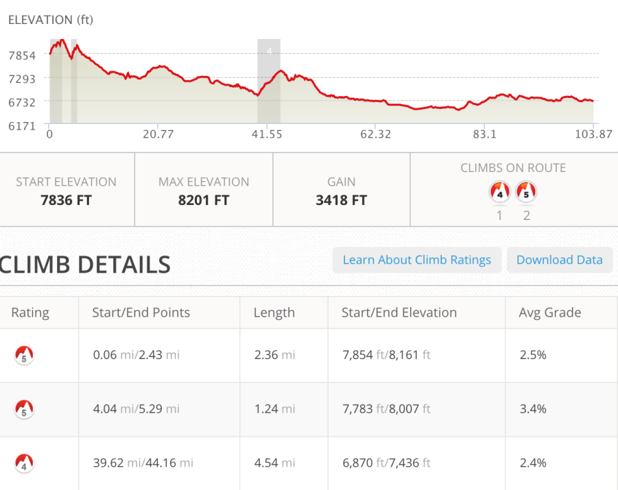
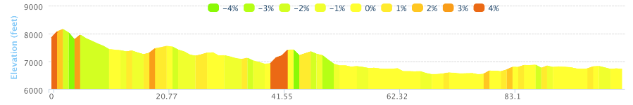
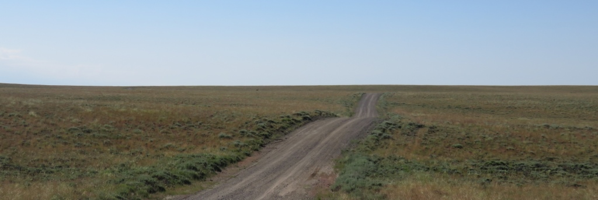
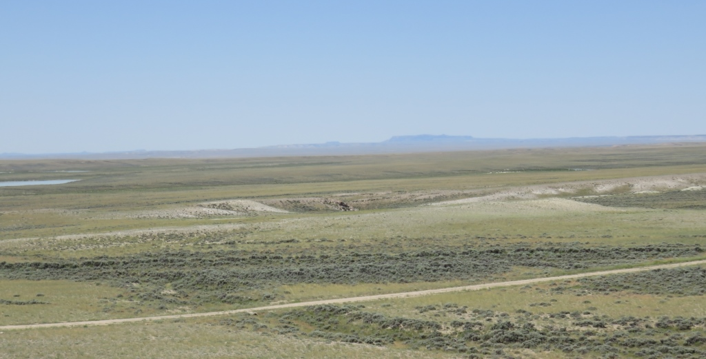
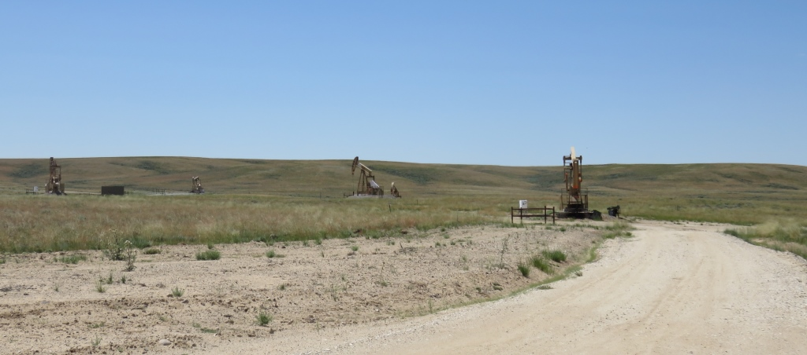
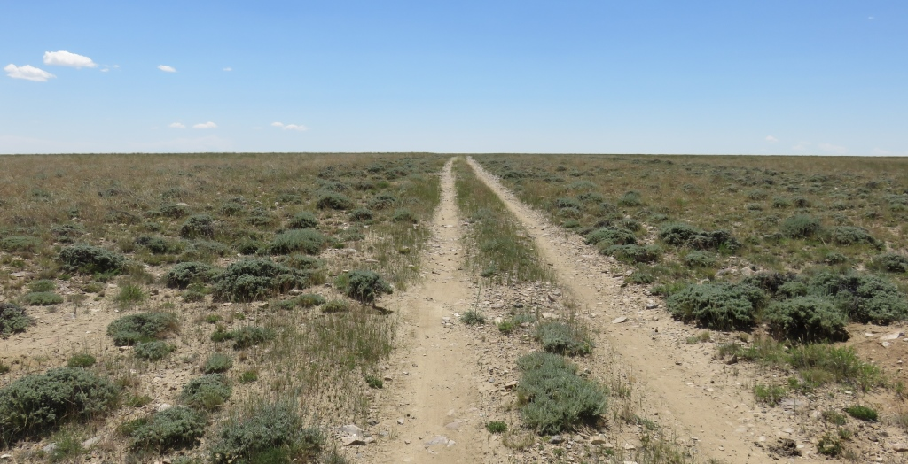
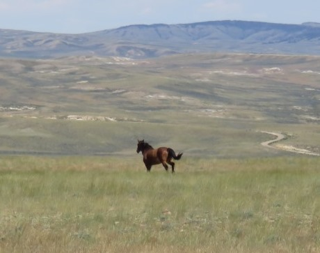
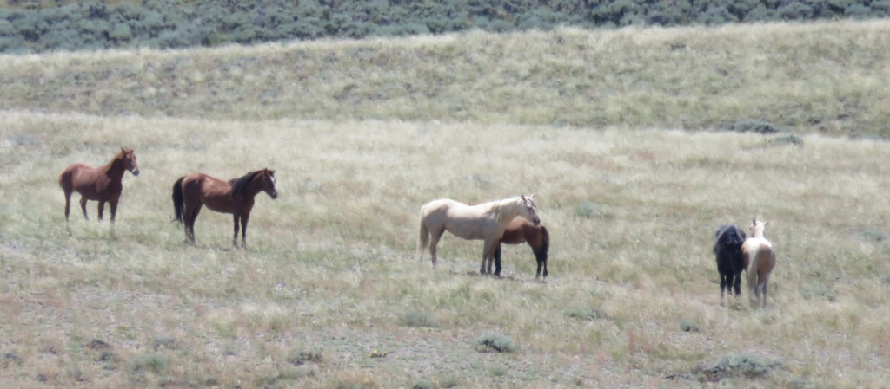
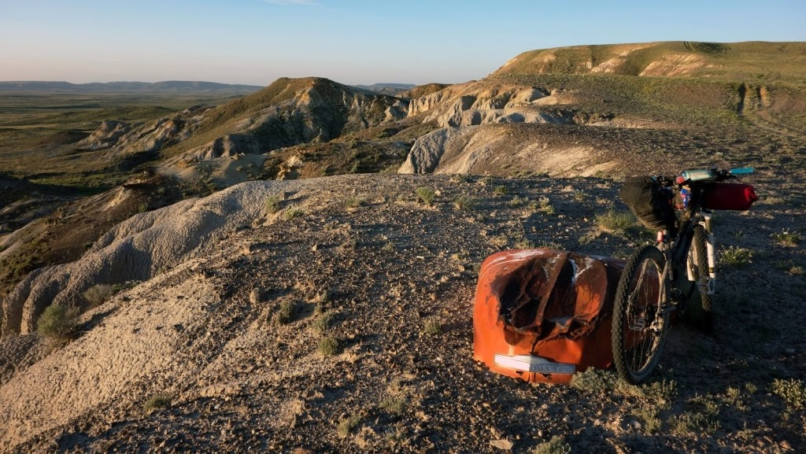
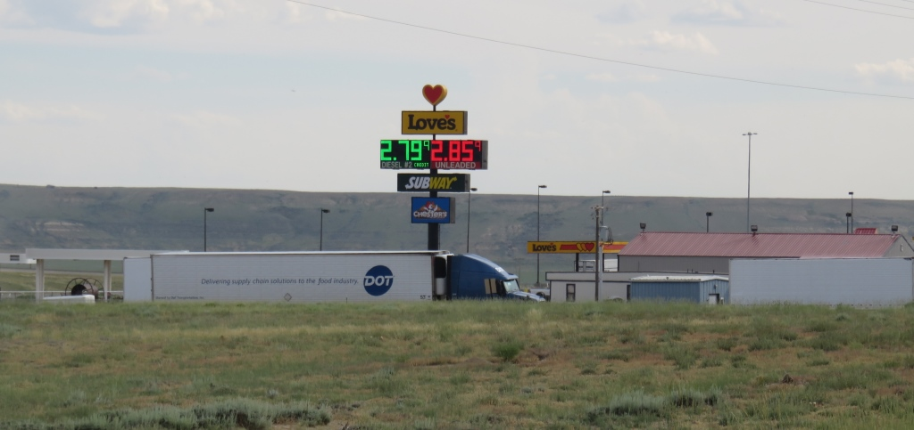

This was a really long day with not much to see. Deceptively flat with long gradual climbs and decents.
From Atlantic City - go up and out into the desert
The desert surrounded me pretty quickly. After about 10 miles I crossed the Sweetwater River. I had ridden
with Andrew
up to this point. He took a little while longer and so I went off before him. I didn't see him until the end
of the day
when I learned he had flatted at the river.

The Sweetwater River was the last place to get water and we had almost 80 miles to go so I carried more water then any other day.

The mountains were still out there but mostly there was a whole lot of nothing.

The main road went through sections were the oil and gas industry has kind of taken over.Riding along a ridge
The course had been changed from previous years to avoid some development and construction but also to make it more difficult and more fun. It turned off the main road where I took a wrong turn for a couple hundred feet and then found the jeep trail.
The jeep trail had one section where you couldn't see any tracks and were on top of a bluff. I could see the trail about a half mile away but not how to get there. I finally found a ledge to get off the bluff and continue on my way.
Flat but the roads not
The double track was rutted and difficult to get a good line through.

I went thru a section for about 10 miles that felt more remote than almost any other spot on the ride.

Wild horses along the wayThere were no cattle guards, fences or signs. I passed a pack of wild horses and the single horse above ran off when I stopped.

Picture from Jill Horner's story also gives a sense of what I was riding through.

Whose in charge hear?
The final 50 miles was on gravel roads. I saw a couple guys working by one of the gas/oil pumping stations and they gave me a couple bottles of water. I was never close to running out of water but was certainly happy to see the truck stop when it finally appeared on the horizon.

After a long stop at the truck stop I found a motel on the other side of the interstate. They were just installing A/C units which helped somewhat. The wind kicked up to 20 or 30 miles an hour which made it difficult to ride back to the truck stop to get supplies and dinner.
Sunday, June 28 - ~98 miles - Atlantic City to Wamsutter, WY - Hot and dry
Text by Jim O'Brien . Photographs by Jim O'BrienTD on Flickr.